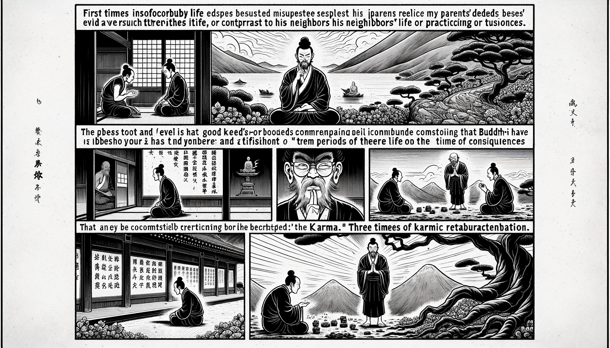

十二巻 巻一覧
正法眼藏第8 三時業
本ページは tools/gen_web_volumes.py が doc/正法眼蔵.txt から冒頭を抜粋して生成しています。図・詳細解説は今後の手編集で拡張できます。
出典（原文）: https://shomonji.or.jp/zazen/doc/genzou.html
（ローカル生成の全文: 全文ページ）
この巻の位置づけ（学習メモ）
道元『正法眼蔵』十二巻の第8篇「三時業」です。禅籍・経典への引用や語の行間が重なりやすいので、一度ですべてを要約に還元しない読み方を推奨します。問答 Bot では巻スコープにこの題名を含めると応答が安定しやすいことがあります。
語彙の足場
- 題名語：巻題「三時業」は、道元が本章で特に扱う論点の看板です。辞書義だけに固定せず、本文中の用例で意味を確かめます。
- 引用と典故：公案・経文の引用は、一字一句の照応（何に答えているか）を押さえると全体が見えやすくなります。
- 学び方：冒頭だけでも音読し、分からない箇所は印を付けて後から問うとよいです。
本文（冒頭・自動抜粋）
出典はリポジトリ内 doc/正法眼蔵.txt です。原文の参照元: https://shomonji.or.jp/zazen/doc/genzou.html
第十九祖鳩摩羅多尊者、至中天竺國、有大士、名闍夜多。問曰、我家父母、素信三寶。而甞縈疾瘵、凡所營事、皆不如意。而我鄰家、久爲栴陀羅行、而身常勇健、所作和合。彼何幸、而我何辜（第十九祖鳩摩羅多尊者、中天竺國に至るに、大士有り、闍夜多と名づく。問うて曰く、我が家の父母、素三寶を信ず。而も甞より疾瘵に縈はれ、凡そ營む所の事、皆な不如意なり。而も我が鄰家、久しく栴陀羅の行を爲して、而も身は常に勇健なり、所作和合す。彼れ何の幸かある、而も我れ何の辜かある）。
尊者曰、何足疑乎、且善惡之報有三時焉。凡人但見仁夭、暴壽、逆吉義凶、便謂亡因果虛罪福。殊不知、影響相隨、毫釐靡忒。縱經百千萬劫、亦不磨滅（尊者曰く、何ぞ疑ふに足らんや、且く善惡の報に三時有り。凡そ人、但だ仁は夭に、暴は壽く、逆は吉く義は凶なりとのみ見て、便ち因果を亡じ、罪福虛しと謂へり。殊に知らず、影響相隨ひて、毫釐も忒ふこと靡きを。縱ひ百千萬劫を經とも、亦た磨滅せず）。
時闍夜多、聞是語已、頓釋所疑（時に闍夜多、是の語を聞き已りて、頓に所疑を釋せり）。
鳩摩羅多尊者は、如來より第十九代の附法なり。如來まのあたり名字を記しまします。ただ釋尊一佛の法をあきらめ正傳せるのみにあらず、かねて三世の諸佛の法をも曉了せり。闍夜多尊者、いまの問をまうけしよりのち、鳩摩羅多尊者にしたがひて、如來の正法を修習し、つひに第二十代の祖師となれり。これもまた、世尊はるかに第二十祖は闍夜多なるべしと記しましませり。しかあればすなはち、佛法の批判、もともかくのごとくの祖師の所判のごとく習學すべし。いまのよに因果をしらず、業報をあきらめず、三世をしらず、善惡をわきまへざる邪見のともがらに群すべからず。
いはゆる、善惡之報有三時焉といふは、
三時、
一者順現法受。二者順次生受。三順後次受。
これを三時といふ。
佛祖の道を修習するには、その最初より、三時の業報の理をならひあきらむるなり。しかあらざれば、おほくあやまりて邪見に墮するなり。ただ邪見に墮するのみにあらず、惡道におちて長時の苦をうく。續善根せざるあひだは、おほくの功徳をうしなひ、菩提の道ひさしくさはりあり、をしからざらめや。この三時の業は、善惡にわたるなり。
第一順現法受業者、謂若業此生造作増長、卽於此生受異熟果、是名順現法受業（第一に順現法受業とは、謂く、若し業を此生に造作増長して、卽ち此生に於て異熟果を受く、是れを順現法受業と名づく）。
いはく、人ありて、あるいは善にもあれ、あるいは惡にもあれ、この生につくりて、すなはちこの生にその報をうくるを、順現報受業といふ。
惡をつくりて、この生にうけたる例。
曾有採樵者、入山遭雪、迷失途路。時會日暮、雪深寒凍、將死不久。卽前入一蒙密林中、乃見一羆。先在林内。形色靑紺、眼如雙炬。其人惶恐、分當失命。此實菩薩現受羆身。見其憂恐、尋慰諭言、汝今勿怖。父母於子或有異心、吾今於汝終無悪意（曾採樵の者有りて、山に入りて雪に遭ひ、途路を迷失す。時會日暮れなり、雪深く寒凍えて、將に死せんとすること久しからじ。卽ち前んで一の蒙密林の中に入るに、乃ち一の羆を見る。先より林の内に在り。形色靑紺にして、眼は雙つの炬の如し。其の人惶恐し、當に失命すべきを分とせり。此れは實に菩薩の、羆の身を現受せるなり。其の憂恐するを見て、尋いで慰諭して言く、汝、今怖るること勿れ。父母は子に於て或しは異心有らんも、吾れは今、汝に於て終に悪意無けん）。
卽前捧取、將入窟中、温燸其身、令蘇息已、取諸根果、勸隨所食。恐冷不消、抱持而臥。如是恩養經於六日。至第七日天晴路現。人有歸心。羆既知已、復取甘果飽而餞之。送至林外慇懃告別（卽ち前んで捧取して將て窟の中に入り、其の身を温燸めて、蘇息せしめ已りて、諸の根果を取りて、勸めて所食に隨はしむ。冷にして消せざらしめんことを恐りて、抱持して臥せり。是の如く恩養して六日を經たり。第七日に至つて天晴れ路現ず。人に歸の心有り。羆既に知り已りて、復た甘果を取つて飽かしめて之に餞ひせり。送りて林外に至つて慇懃に別れを告ぐ）。
人跪謝曰、何以報（人、跪いて謝して曰く、何を以てか報ぜん）。
羆言、我今不須餘報、但如比日我護汝身、汝於我命、亦願如是（羆言く、我れ今餘の報を須めず、但だ比日我が汝の身を護りしが如く、汝、我が命に於ても亦た願はくは是の如くすべし）。
其人敬諾、擔樵下山、逢二獵師。問曰、山中見何蟲獸（其の人敬諾し、擔樵して山を下るに、二の獵師に逢へり。問うて曰く、山中にして何なる蟲獸をか見つる）。
樵人答曰、我亦不見餘獸、唯見一羆（我れ亦た餘の獸を見ず、唯一の羆を見る）。
獵師求請、能示我不（能く我れに示すべしや不や）。
樵人答曰、若能與三分之二、吾當示汝（若し能く三分の二を與へば、吾れ當に汝に示すべし）。
獵師依許、相與倶行、竟害羆命、分肉爲三。樵人兩手欲取羆肉、惡業力故、雙臂倶落。如珠縷斷、如截藕根。獵師危忙、驚問所以、樵人恥愧、具述委曲（獵師依許し、相與て倶に行き、竟に羆の命を害せり、肉を分ちて三と爲す。樵人兩手をもて羆の肉を取らんと欲るに、惡業力の故に、雙の臂、倶に落つ。珠の縷を斷るが如く、藕の根を截るが如し。獵師危忙し、驚いて所以を問ふ、樵人恥愧ぢて、具さに委曲を述ぶ）。
是二獵師、責樵人曰、他既於汝有此大恩、汝今何忍行斯惡逆。怪哉、汝身何不糜爛（是の二の獵師、樵人を責めて曰く、他、既に汝に於て此の大恩有り、汝、今何ぞ斯の惡逆を行ずるに忍びんや。怪しき哉。汝が身何ぞ糜爛せざる）。
於是獵師、共其肉施僧伽藍（是に於て獵師、共に其の肉を僧伽藍に施す）。
時僧上座、得妙願智、卽時入定、觀是何肉、卽知是與一切衆生作利樂者、大菩薩肉。卽時出定、以此事白衆。衆聞驚歎、共取香薪焚燒其肉。收其餘骨、起窣堵婆禮拜供養（時に僧の上座、妙願智を得て、卽時に入定して、是れ何の肉ぞと觀ずるに、卽ち、是れ一切衆生の與に利樂を作す者、大菩薩の肉なることを知れり。卽時に出定して、此の事を以て衆に白す。衆、聞きて驚歎し、共に香薪を取りて其の肉を焚燒す。其の餘骨を收めて、窣堵婆を起てて禮拜供養せり）。
如是惡業、待相續、或度相續、方受其果（是の如きの惡業は、相續を待つて、或いは相續に度りて、方に其の果を受くべし）。
かくのごとくなるを、惡業の順現報受業となづく。おほよそ恩をえては報をこころざすべし、他に恩しては報をもとむることなかれ。いまも恩ある人を逆害をくはへんとせん、その惡業かならずうくべきなり。衆生ながくいまの樵人のこころなかれ。林外にして告別するには、いかがしてこの恩を謝すべきといふといへども、やまのふもとに獵師にあふては二分の肉をむさぼる。貪欲にひかれて大恩所を害す。在家出家、ながくこの不知恩のこころなかれ。惡業力のきるところ、兩手を斷ずること、刀劒のきるよりもはやし。
この生に善をつくりて、順現報受に善報をえたる例。
昔健駄羅國迦膩色迦王、有一黄門、恆監内事。暫出城外、見有群牛、數盈五百、來入城内。問駈牛者、此是何牛（昔、健駄羅國の迦膩色迦王に、一の黄門有りて、恆に内事を監す。暫く城外に出でて、群牛有るを見るに、數五百に盈れり、城内に來入す。駈牛の者に問ふ、此れは是れ何の牛ぞ）。
答言、此牛將去其種（此の牛は將に其の種を去らんとす）。
於是黄門卽自思惟、我宿惡業受不男身、今應以財救此牛難。遂償其債悉令得脱。善業力故、令此黄門卽復男身。深生慶祝、尋還城内、侍立宮門。附使啓王、請入奉覲。王令喚入、怪問所由。於是黄門、具奏上事。王聞驚喜、厚賜珍財、轉授高官、令知外事（是に於て黄門卽ち自ら思惟すらく、我れ宿惡業に不男の身を受く、今應に財を以て此の牛の難を救ふべし。遂に其の債を償つて悉く得脱せしめつ。善業力の故に、此の黄門をして卽ち男身に復せしめぬ。深く慶祝を生じ、尋いで城内に還つて、宮門に侍立す。使に附して王に啓し、入つて奉覲せんことを請ふ。王、喚び入れしめ、怪しんで所由を問ふ。是に黄門、具に上の事を奏す。王聞きて驚喜して、厚く珍財を賜ひ、轉た高官を授けて、外事を知らしめき）。
如是善業、要待相續、或度相續、方受其果（是の如きの善業は、要ず相續を待つて、或いは相續を度りて、方に其の果を受くべし）。
あきらかにしりぬ、牛畜の身、をしむべきにあらざれども、すくふ人、善果をうく。いはんや恩田をうやまひ、徳田をうやまひ、もろもろの善を修せんをや。かくのごとくなるを、善の順現報受業となづく。善によりて惡によりて、かくのごとくのことおほかれど、つくしあぐるにいとまあらず。
第二順次生受業者、謂若業此生造作増長、於第二生受異熟果、是名順次生受業（第二に順次生受業者、謂く、若し業を此の生に造作し増長して、第二生に異熟果を受くるを、是れを順次生受業と名づく）。
いはく、もし人ありて、この生に五無間業をつくれる、かならず順次生に地獄におつるなり。順次生とは、この生つぎの生なり。餘のつみは、順次生に地獄におつるもあり。また順後次受のひくべきあれば、順次生に地獄におちず、順後業となることもあり。この五無間業は、さだめて順次生受業に地獄におつるなり。順次生、また第二生とも、これをいふなり。
五無間業
一者殺父、二者殺母、三者殺阿羅漢、四者出佛身血、五者破和合僧。
いはく、もし人ありて、この生に五無間業をつくるもの、かならず順次生に地獄に墮するなり。あるいはつぶさに五無間業ともにつくるものあり、いはゆる迦葉波佛のときの華上比丘これなり。あるいは一無間をつくるものあり、いはゆる釋迦牟尼佛のときの阿闍世王なり。そのちちをころす。あるいは三無間業をつくれるものあり、釋迦牟尼佛のときの阿逸多これなり。ちちをころし、ははをころし、阿羅漢をころす。この阿逸多は在家のときつくる、のちに出家をゆるさる。
提婆達多、比丘として三無間業をつくれり。いはゆる破僧、出血、殺阿羅漢なり。あるいは提婆達兜といふ。此翻天熟（此に天熟と翻ず）。その破僧といふは、
將五百新學愚蒙比丘、吉伽耶山作五邪法而破法輪僧、身子厭之眠熟、目連擎衆將還。提婆達多眠起發誓、誓報此恩捧縱三十肘、廣十五肘石、擲佛。山神以手遮石、小石迸傷佛足、血出（五百の新學愚蒙の比丘を將ゐて吉伽耶山に五邪法を作して法輪僧を破す。身子、之を厭ひて眠熟せしめ、目連、衆を擎げて將に還らしめんとせり。提婆達多、眠より起きて誓を發し、此の恩に報いんと誓ひ、縱三十肘、廣十五肘の石を捧げて佛に擲ちつ。山神、手を以て石を遮り、小石迸りて佛の足を傷つけ、血出でぬ）。
もしこの説によらば、破僧さき、出血のちなり。もし餘説によらば、破僧、出血の前後、いまだあきらめず。また拳をもて蓮華色比丘尼をうちころす。この比丘尼は阿羅漢なり。これを三無間業をつくれりといふなり。
破僧罪につきては、破羯磨僧あり、破法輪僧あり。破羯磨僧は三洲にあるべし、北洲をのぞく。如來在世より、法滅のときにいたるまでこれあり。破法輪僧はただ如來在世のみにあり。餘時はただ南洲にあり、三洲になし。この罪、最大なり。この三無間業をつくれるによりて、提婆達多、順次生に阿鼻地獄に墮す。かくのごとく五逆つぶさにつくれるものあり、一逆をつくれるものあり。提婆達多がごときは三逆をつくれり。ともに阿鼻地獄に墮すべし。その一逆をつくれるがごとき、阿鼻地獄一劫の壽報なるべし。具造五逆のひと、一劫のなかにつぶさに五報をうくとやせん、また前後にうくとやせん。
先徳曰く、阿含、涅槃同在一劫、火有厚薄（阿含、涅槃に同じく一劫在り、火に厚薄有り）と。
あるいはいはく、唯在増苦増（唯だ増苦増すこと在り）と。
いま提婆達多、かさねて三逆をつくれり、一逆をつくれる人の罪には三倍すべし。しかあれども、すでに臨命終のときは南無の言をとなへて惡心すこしきまぬかる。うらむらくは具足して南無佛と稱ぜざること。阿鼻にしてははるかに釋迦牟尼佛に歸命したてまつる。續善ちかきにあり。なほ阿鼻地獄に四佛の提婆達多あり。
瞿伽離比丘は千釋出家の時、そのなかの一人なり。調達、瞿伽離、二人出城門のとき、二人ののれる馬、たちまちに仆倒し、二人のむまよりおち、冠ぬげておちぬ。ときのみる人、みないはく、この二人は佛法におきて益をうべからず。
この瞿伽離比丘、また倶伽離といふ。此生に舍利弗、目犍連を謗ずるに、無根の波羅夷をもてす。世尊みづからねんごろにいさめましますにやまず。梵王くだりていさむるにやまず。二尊を謗ずるによりて、次生に墮すべし。又、いまに續善根の緣にあはず。
四禪比丘、臨命終のとき謗佛せしによりて四禪の中陰かくれて阿鼻地獄に墮せり。かくのごとくなるを順次生受業となづく。
この五無間業を、なにによりて無間業となづく。そのゆゑ五あり。
一者趣果無間。故名無間。捨此身已、次身卽受。故名無間（一つには趣果無間なり。故に無間と名づく。此の身を捨し已りて次の身を卽ち受く。故に無間と名づく）。
二者受苦無間。故名無間。五逆之罪、生阿鼻獄一劫之中、受苦相續無有樂間。因從果稱名無間業（二つには受苦無間なり。故に無間と名づく。五逆の罪、阿鼻獄に生ずる一劫の中、受苦相續して樂間有ること無し。因つて果に從つて稱して無間業と名づく）。
三者時量無間故、名無間。五逆之罪、生阿鼻獄。決定一劫時不斷故。故名無間（三つには時量無間の故に無間と名づく。五逆の罪は阿鼻獄に生ず。決定して一劫時に不斷なるが故に。故に無間と名づく）。
四者壽命無間。故名無間。五逆之罪、生阿鼻獄。一劫之中、壽命無絶。因從果稱名爲無間（四つには壽命無間なり。故に無間と名づく。五逆の罪は阿鼻獄に生ず。一劫の中、壽命絶ゆること無し。因つて果に從つて名を稱じて無間と爲す）。
五者身形無間。故名無間。五逆之罪、生阿鼻獄。阿鼻地獄、縱廣八萬四千由旬、一人入中身亦遍滿。一切人入、身亦遍滿。不相障礙。因從果號名曰無間（五つには身形無間なり。故に無間と名づく。五逆の罪は阿鼻獄に生ず。阿鼻地獄は、縱廣八萬四千由旬なり。一人中に入るも身亦た遍滿す。一切人入るも身亦た遍滿す。相障礙せず。因つて果に從つて號名て無間と曰ふ）。
第三順後次受業者、謂若業此生造作増長、墮第三生、或墮第四生、或復過此、雖百千劫、受異熟果、是名順後次受業（第三に順後次受業とは、謂く、若し業を此生に造作し増長して、第三生に墮し、或いは第四生に墮し、或いは復た此れを過ぎて、百千劫なりと雖も異熟果を受く、是れを順後次受業と名づく）。
いはく、人ありて、この生に、あるいは善にもあれ、あるいは惡にもあれ、造作しをはれりといへども、あるいは第三生、あるいは第四生、乃至百千生のあひだにも、善惡の業を感ずるを、順後次受業となづく。菩薩の三祇劫の功徳、おほく順後次受業なり。かくのごとくの道理しらざるがごときは、行者おほく疑心をいだく。いまの闍夜多尊者の在家のときのごとし。もし鳩摩羅多尊者にあはずは、そのうたがひ、とけがたからん。行者もし思惟それ善なれば、惡すなはち滅す。それ惡思惟すれば、善すみやかに滅するなり。
室羅筏國昔有二人、一恆修善、一常作惡。修善行者、於一身中、恆修善行、未甞作惡。作惡行者、於一身中、常作惡行、未甞修善（室羅筏國に昔二の人有り、一は恆に善を修す、一は常に惡を作る。善行を修する者は、一身の中に、恆に善行を修して、未だ甞て惡を作らず。惡行を作る者は、一身の中に、常に惡行を作りて、未だ甞て善を修せず）。
修善行者、臨命終時、順後次受惡業力故、歘有地獄中有現前、便作是念、我一身中、恆修善行、未甞作惡、應生天趣、何因緣有此中有現前。遂起念言、我定應有順後次受惡業今熟故、此地獄中有現前（善行を修せる者は、臨命終の時に、順後次受の惡業の力の故に、歘に地獄の中有有りて現前するに、便ち是の念を作さく、我れ一身の中に恆に善行を修す、未だ甞て惡を作らず。應に天趣に生ずべきに、何の因緣にてか此の中有有りて現前する。遂に念を起して言く、我れ定んで應に順後次受の惡業有りて今熟すべきが故に、此の地獄の中有、現前す）。
卽自憶念一身已來所修善業、深生歡喜。由勝善思現在前故、地獄中有卽便隱歿、天趣中有歘爾現前。從此命終、生於天上（卽ち自ら一身已來の所修の善業を憶念して、深く歡喜を生ず。勝善思現在前するに由るが故に、地獄の中有卽便ち隱歿して、天趣の中有歘爾に現前す。此れより命終して、天上に生ぜり）。
この恆修善行のひと、順後次受のさだめてうくべきがわが身にありけるとおもふのみにあらず、さらにすすみておもはく、一身の修善もまたさだめてのちにうくべし。ふかく歡喜すとはこれなり。この憶念まことなるがゆゑに、地獄の中有すなはちかくれて、天趣の中有たちまちに現前して、いのちをはりて天上にむまる。この人もし惡人ならば、命終のとき、地獄の中有現前せば、おもふべし、われ一身の修善その功徳なし、善惡あらんにはいかでかわれ地獄の中有をみん。このとき因果を撥無し、三寶を毀謗せん。もしかくのごとくならば、すなはち命終し、地獄におつべし。かくのごとくならざるによりて、天上にむまるるなり。この道理、あきらめしるべし。
作惡行者、臨命終時、順後次受善業力故、歘有天趣中有現前、便作是念、我一身中常作惡行、未甞修善、應生地獄、何緣有此中有現前。遂起邪見、撥無善惡及異熟果。邪見力故、天趣中有尋卽隱歿、地獄中有歘爾現前。從此命終、生於地獄（惡行を作れる者は、臨命終の時、順後次受の善業力の故に、歘ちに天趣の中有有りて現前するに、便ち是の念を作さく、我れ一身の中に常に惡行を作る、未だ甞て善を修せず、應に地獄に生ずべし、何の緣にてか此の中有有りて現前する。遂に邪見を起して、善惡及び異熟果を撥無す。邪見力の故に、天趣の中有尋いで卽ち隱歿し、地獄の中有歘爾に現前す。此れより命終して地獄に生ぜり）。
この人いけるほど、つねに惡をつくり、さらに一善を修せざるのみにあらず、命終のとき、天趣の中有の現前せるをみて、順後次受をしらず、われ一生のあひだ惡をつくれりといへども、天趣にむまれんとす。はかりしりぬ、さらに善惡なかりけり。かくのごとく善惡を撥無する邪見力のゆゑに、天趣の中有たちまちに隱歿して、地獄の中有すみやかに現前し、いのちをはりて地獄におつ。これは邪見のゆゑに、天趣の中有かくるるなり。
しかあればすなはち、行者かならず邪見なることなかれ。いかなるか邪見、いかなるか正見と、かたちをつくすまで學習すべし。
まづ因果を撥無し、佛法を毀謗し、三世および解脱を撥無する、ともにこれ邪見なり。まさにしるべし、今生のわが身、ふたつなしみつなし。いたづらに邪見におちて、むなしく惡業を感得せん、をしからざらんや。惡をつくりながら惡にあらずとおもひ、惡の報あるべからずと邪思惟するによりて、惡報の感得せざるにはあらず。
皓月供奉、問長沙景岑和尚、古徳云、了卽業障本來空、未了應須償宿債。只如師子尊者、二祖大師、爲什麼得償債去（皓月供奉、長沙の景岑和尚に問ふ、古徳云く、了ずれば卽ち業障本來空なり、未だ了ぜずは應に須らく宿債を償ふべし。只師子尊者、二祖大師の如きは、什麼としてか償債を得去るや）。
長沙云、大徳不識本來空（大徳、本來空を識らず）。
彼云、如何是本來空（如何ならんか是れ本來空）。
長沙云、業障是（業障是れなり）。
彼云、如何是業障（如何ならんか是れ業障）。
長沙云、本來空是（本來空是れなり）。
皓月無語。
長沙便示一偈云（長沙便ち一偈を示して云く）、
假有元非有（假の有も元と有に非ず）、
図解（4コマ・AI生成）
教義の根拠は本文・出典に従い、漫画は比喩の補助に留めてください。

深掘り（読解のコツ）
- 道元文は定義の羅列に見えても、多くの場合誤解への遮断と正伝の姿勢が背骨になっています。
- 「当体」「現成」「即」などの語が出たら、その巻独自の差別相にどう接続しているかをメモしておくとよいです。